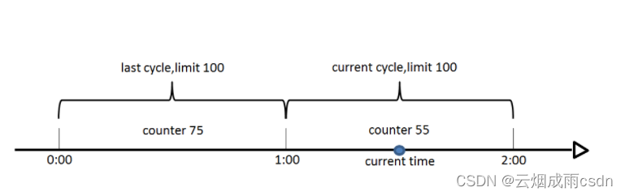
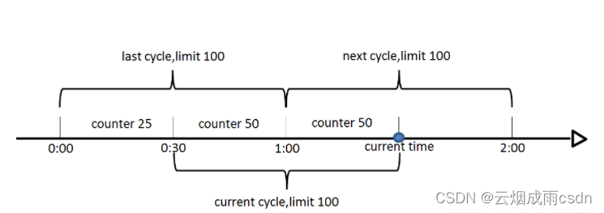
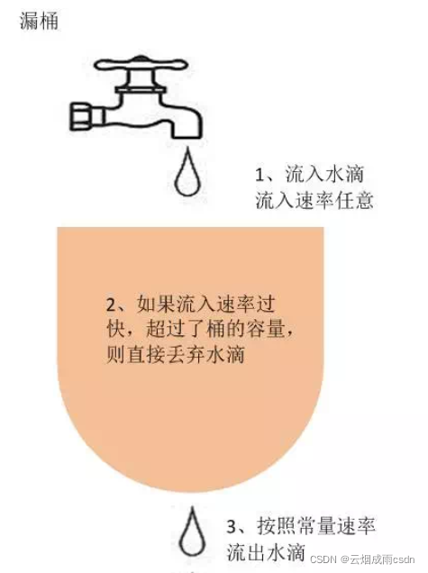
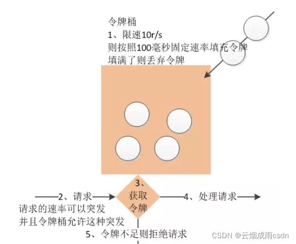

[toc]
1.介绍
Spring Cloud Gateway 是 Spring Cloud 的一个全新项目，该项目是基于 Spring 5.0，Spring Boot 2.0 和 Project Reactor 等技术开发的网关，它旨在为微服务架构提供一种简单有效的统一的 API 路由管理方式。
Spring Cloud Gateway 作为 Spring Cloud 生态系统中的网关，目标是替代 Netflix Zuul，其不仅提供统一的路由方式，并且基于 Filter 链的方式提供了网关基本的功能，例如：安全、监控、埋点和限流等。
Spring Cloud Gateway 的特征：
- 基于 Spring Framework 5，Project Reactor 和 Spring Boot 2.0 动态路由
- Predicates 和 Filters 作用于特定路由
- 集成 Hystrix 断路器
- 集成 Spring Cloud DiscoveryClient
- 易于编写的 Predicates 和 Filters
- 限流
- 路径重写
1.2术语
- Route（路由）：这是网关的基本构建块。它由一个 ID，一个目标 URI，一组断言和一组过滤器定义。如果断言为真，则路由匹配。-> 理解为分发(改变)路径
- Predicate（断言）：这是一个 Java 8 的 Predicate。输入类型是一个 ServerWebExchange。我们可以使用它来匹配来自 HTTP 请求的任何内容，例如 headers 或参数。-> 按指定的路径拦截
- Filter（过滤器）：这是org.springframework.cloud.gateway.filter.GatewayFilter的实例，我们可以使用它修改请求和响应。-> 拦截下的路径可以做一些操作
1.2流程:

客户端向 Spring Cloud Gateway 发出请求。然后在 Gateway Handler Mapping 中找到与请求相匹配的路由，将其发送到 Gateway Web Handler。Handler 再通过指定的过滤器链来将请求发送到我们实际的服务执行业务逻辑，然后返回。 过滤器之间用虚线分开是因为过滤器可能会在发送代理请求之前（“pre”）或之后（“post”）执行业务逻辑。
请求会两次经过filter -> 进来时和出去时
2.使用
pom.xml
<dependency>
<groupId>org.springframework.cloud</groupId>
<artifactId>spring-cloud-starter-gateway</artifactId>
</dependency>
注意,web和路由不能同时引进
2.1 路由
路由是用来分发的,这是基础,后面的过滤器和断言器都是为路由服务的.
Spring Cloud Gateway 网关路由有两种配置方式：
- 在配置文件 yml 中配置
- 通过
@Bean自定义 RouteLocator，在启动主类 Application 中配置
这两种方式是等价的，建议使用 yml 方式进配置。
application.yml
server:
port: 8081
spring:
cloud:
gateway:
routes:
- id: neo_route
uri: http://www.ityouknow.com
predicates:
- Path=/spring-cloud
logging:
level:
org.springframework.cloud.gateway: trace
org.springframework.http.server.reactive: debug
org.springframework.web.reactive: debug
reactor.ipc.netty: debug
各字段含义如下：
- id：我们自定义的路由 ID，保持唯一
- uri：目标服务地址
- predicates：路由条件，Predicate 接受一个输入参数，返回一个布尔值结果。该接口包含多种默认方法来将 Predicate 组合成其他复杂的逻辑（比如：与，或，非）。
- filters：过滤规则，本示例暂时没用。
routes下可以有很多id,predicates下可以有很多过滤工厂,
上面这段配置的意思是，配置了一个 id 为 neo_route 的路由规则，当访问地址 http://localhost:8080/spring-cloud时会自动转发到地址：http://www.ityouknow.com/spring-cloud。
转发功能同样可以通过代码来实现，我们可以在启动类 GateWayApplication 中添加方法 customRouteLocator() 来定制转发规则。
@SpringBootApplication
public class GateWayApplication {
public static void main(String[] args) {
SpringApplication.run(GateWayApplication.class, args);
}
@Bean
public RouteLocator customRouteLocator(RouteLocatorBuilder builder) {
return builder.routes()
.route("path_route", r -> r.path("/about")
.uri("http://ityouknow.com"))
.build();
}
}
上面配置了一个 id 为 path_route 的路由，当访问地址http://localhost:8080/about时会自动转发到地址：http://www.ityouknow.com/about和上面的转发效果一样，只是这里转发的是以项目地址/about格式的请求地址。
上面两个示例中 uri 都是指向了我的个人网站，在实际项目使用中可以将 uri 指向对外提供服务的项目地址，统一对外输出接口。
其实不一定写在application里,写到任意一个会被加载的类中都可以,@component 放在类上就会被加载
2.2 断言器
Spring Cloud Gateway 是通过 Spring WebFlux 的 HandlerMapping 做为底层支持来匹配到转发路由，Spring Cloud Gateway 内置了很多 Predicates 工厂，这些 Predicates 工厂通过不同的 HTTP 请求参数来匹配，多个 Predicates 工厂可以组合使用。
application.yml
spring:
cloud:
gateway:
routes:
- id: host_foo_path_headers_to_httpbin
uri: http://ityouknow.com
predicates:
- Host=**.foo.org
- Path=/headers
- After=2018-01-20T06:06:06+08:00[Asia/Shanghai]
predicates下的配置使用的都是断言工厂
Host -> HostRoutePredicateFactory
Path -> PathRoutePredicateFactory 只需要写前缀,(后面的RoutePredicateFactory不用写,也不能写);
springcloud是把所有的断言工厂加载进来,然后得到类名,去掉后缀作为key,类对象作为vaule,然后拿着配置文件中的值去get出值
源码:
############
# 得到key
# org.springframework.cloud.gateway.support.NameUtils.class
public static String normalizeRoutePredicateName(Class<? extends RoutePredicateFactory> clazz) {
return removeGarbage(clazz.getSimpleName().replace(RoutePredicateFactory.class.getSimpleName(), ""));
}
############
# put进map,存起来
# org.springframework.cloud.gateway.route.RouteDefinitionRouteLocator.class
public RouteDefinitionRouteLocator(RouteDefinitionLocator routeDefinitionLocator,
List<RoutePredicateFactory> predicates,
List<GatewayFilterFactory> gatewayFilterFactories,
GatewayProperties gatewayProperties, ConversionService conversionService) {
this.routeDefinitionLocator = routeDefinitionLocator;
this.conversionService = conversionService;
initFactories(predicates);
gatewayFilterFactories.forEach(
factory -> this.gatewayFilterFactories.put(factory.name(), factory));
this.gatewayProperties = gatewayProperties;
}
############
# 根据名字取值
# org.springframework.cloud.gateway.route.RouteDefinitionRouteLocator.class
@SuppressWarnings("unchecked")
private List<GatewayFilter> loadGatewayFilters(String id,
List<FilterDefinition> filterDefinitions) {
List<GatewayFilter> filters = filterDefinitions.stream().map(definition -> {
GatewayFilterFactory factory = this.gatewayFilterFactories
.get(definition.getName());
if (factory == null) {
throw new IllegalArgumentException(
"Unable to find GatewayFilterFactory with name "
+ definition.getName());
}
# ... 后面还有很多,不粘贴出来了
}
2.3 过滤器
Spring Cloud Gateway 的 Filter 的生命周期不像 Zuul 的那么丰富，它只有两个：“pre” 和 “post”。
PRE： 这种过滤器在请求被路由++之前调用++。我们可利用这种过滤器实现身份验证、在集群中选择请求的微服务、记录调试信息等。
POST：这种过滤器在路由到微服务++以后执行++。这种过滤器可用来为响应添加标准的 HTTP Header、收集统计信息和指标、将响应从微服务发送给客户端等。 Spring Cloud Gateway 的 Filter 分为两种：
GatewayFilter
GlobalFilter
GlobalFilter 会应用到所有的路由上，而 GatewayFilter 将应用到单个路由或者一个分组的路由上。GatewayFilteryer加上配置后也可以变成全局过滤(还不如直接写成全局过滤器呢)
2.3.1 GlobalFilter
直接上自定义的
package com.example.demo.filter;
import java.util.ArrayList;
import java.util.List;
import java.util.Optional;
import org.slf4j.Logger;
import org.slf4j.LoggerFactory;
import org.springframework.cloud.gateway.filter.GatewayFilterChain;
import org.springframework.cloud.gateway.filter.GlobalFilter;
import org.springframework.core.Ordered;
import org.springframework.core.io.buffer.DataBuffer;
import org.springframework.http.server.reactive.ServerHttpResponse;
import org.springframework.stereotype.Component;
import org.springframework.web.server.ServerWebExchange;
import reactor.core.publisher.Mono;
@Component // 让框架加载这个类
public class TestGlobalFilter implements GlobalFilter, Ordered {
// 继承 GlobalFilter 就是全局过滤器了
private static final Logger log = LoggerFactory.getLogger(TestGlobalFilter.class);
// 过滤器的优先级,数字越大优先级越小
@Override
public int getOrder() {
return 0;
}
// 可以在这里干很多很多事情,比如验证请求头信息
@Override
public Mono<Void> filter(ServerWebExchange exchange, GatewayFilterChain chain) {
log.info("这是gateway-filter,{}",exchange);
String value = exchange.getRequest().getPath().value();
System.out.println("过滤器...."+value);
List<String> name = Optional.ofNullable(exchange.getRequest().getHeaders().get("name")).orElse(new ArrayList<String>());
System.out.println("过滤器....头信息-name:"+name);
if (name.contains("xkj")) {
ServerHttpResponse response = exchange.getResponse();
response.getHeaders().add("name", "xkj");
byte[] datas = "非法请求".getBytes();
DataBuffer buffer = response.bufferFactory().wrap(datas);
return response.writeWith(Mono.just(buffer));// 不正常情况时返回
}
// 这里只是对进来的链接处理了,在后面加then(mono)方法就可以处理出去时的链接,mono就是具体的操作,可以用来记录链接使用时间等
return chain.filter(exchange);
}
}
过滤通过后会经过路由拦截并转发啦
2.3.2 GatewayFilter
直接上自定义的
package com.example.demo.filter;
import java.util.ArrayList;
import java.util.List;
import java.util.Optional;
import org.slf4j.Logger;
import org.slf4j.LoggerFactory;
import org.springframework.cloud.gateway.filter.GatewayFilter;
import org.springframework.cloud.gateway.filter.GatewayFilterChain;
import org.springframework.cloud.gateway.filter.factory.StripPrefixGatewayFilterFactory;
import org.springframework.cloud.gateway.route.RouteLocator;
import org.springframework.cloud.gateway.route.builder.RouteLocatorBuilder;
import org.springframework.context.annotation.Bean;
import org.springframework.core.Ordered;
import org.springframework.core.io.buffer.DataBuffer;
import org.springframework.http.server.reactive.ServerHttpResponse;
import org.springframework.stereotype.Component;
import org.springframework.web.server.ServerWebExchange;
import reactor.core.publisher.Mono;
@Component
// 继承GatewayFilter 就是过滤器了
public class TestFilter implements GatewayFilter, Ordered {
private static final Logger log = LoggerFactory.getLogger(TestFilter.class);
@Override
public int getOrder() {
return 0;
}
// 和全局的差不多
@Override
public Mono<Void> filter(ServerWebExchange exchange, GatewayFilterChain chain) {
log.info("这是gateway-filter,{}",exchange);
String value = exchange.getRequest().getPath().value();
System.out.println("过滤器...."+value);
List<String> ages = Optional.ofNullable(exchange.getRequest().getHeaders().get("age")).orElse(new ArrayList<>());
if (ages.contains("20")) {
ServerHttpResponse response = exchange.getResponse();
response.getHeaders().add("name", "xkj");
byte[] datas = "非法请求".getBytes();
DataBuffer buffer = response.bufferFactory().wrap(datas);
return response.writeWith(Mono.just(buffer));
}
return chain.filter(exchange);
}
// 写好过滤器后,就要通过路由来生效了,和前面的路由案例一样
@Bean
public RouteLocator customerRouteLocator(RouteLocatorBuilder builder) {
log.info("这是gateway-customerRouteLocator,{}",builder);
return builder.routes()
.route(r -> r.path("/jp1/**")
.filters(f -> f.rewritePath("/jp1/", "/jportal/").filter(new TestFilter()) )
.uri("http://localhost:5766")
.order(0)
.id("test_route1")
)
.build();
}
}
2.3.3 自定义过滤工厂
前面说到,路由建议写配置,但是路由里只能写工厂,所以接下来介绍自定义过滤工厂
过滤器工厂的顶级接口是GatewayFilterFactory，我们可以直接继承它的两个抽象类来简化开发AbstractGatewayFilterFactory和AbstractNameValueGatewayFilterFactory，这两个抽象类的区别就是前者接收一个参数（像StripPrefix），后者接收两个参数（像AddResponseHeader和我们这种）。

application.yml
spring:
cloud:
gateway:
routes:
- id: jportal_route
uri: http://localhost:5766/
predicates:
- Path=/jpxkj/**
filters:
- Test=name,xkj
# - StripPrefix=1
# - PrefixPath=/jportal
- RewritePath=/jpxkj/, /jportal/
# - RewritePath=/jpxkj/(?<segment>.*), /jportal/${segment}
重点解释filters里面的
filters下面全是工厂
Test是自己写的工厂,同样只能写前缀,原理和断言工厂一样
- StripPrefix : 截断,会截断路径,数字表示截断一个(不懂就看源码)
- prefixPath : 加前缀,会在uri后面加上这个前缀
- RewritePath : 重定向,把/jpxkj/的这段路径变成/jportal/,原理就是用了replaceAll()方法
两个RewritePath能实现同样的效果,官网案例是复杂的,我也不懂非得写复杂,还是两者有区别?
StripPrefix,PrefixPath组合实现了RewritePath的功能
工厂类
package com.example.demo.filter;
import org.springframework.cloud.gateway.filter.GatewayFilter;
import org.springframework.cloud.gateway.filter.factory.AbstractNameValueGatewayFilterFactory;
import org.springframework.http.server.reactive.ServerHttpRequest;
import org.springframework.stereotype.Component;
@Component
public class TestGatewayFilterFactory extends AbstractNameValueGatewayFilterFactory {
//这是接收两个参数的类
@Override
public GatewayFilter apply(NameValueConfig config) {
System.out.println("----TestGatewayFilterFactory:"+config);
return new TestFilter();// 这是前面写好的过滤器
// 也可以现场写一个
// return (exchange, chain) -> {
// ServerHttpRequest request = exchange.getRequest().mutate()
// .header(config.getName(), config.getValue())
// .build();
//
// return chain.filter(exchange.mutate().request(request).build());
// };
}
}
2.4 加入注册中心
前面使用的路径全是指定的,在生产中,肯定要加入注册中心
application.yml
# 增加配置
spring:
application:
name: gateway-server-test
cloud:
gateway:
discovery:
locator:
enabled: true
eureka:
client:
service-url:
defaultZone: http://10.101.90.171:10000/eureka/
加入配置后,网关中心会注册到注册中心,注册中心里所有的应用都会成为uri,名称都是大写,这个要注意
pom.xml
<dependency>
<groupId>org.springframework.cloud</groupId>
<artifactId>spring-cloud-starter-netflix-eureka-client</artifactId>
</dependency>
启动类加上注解@EnableDiscoveryClient
路径用lb://${appName} 就可以了,
application.yml就是这样了
spring:
cloud:
gateway:
discovery:
locator:
enabled: true
# lowerCaseServiceId: true # 应用名变小写
routes:
- id: jportal_route
uri: lb://JPORTAL-XKJ
predicates:
- Path=/jpxkj/**
filters:
- Test1=name,xkj
3. 限流算法
1、计数器（固定窗口）算法
计数器算法是使用计数器在周期内累加访问次数，当达到设定的限流值时，触发限流策略。下一个周期开始时，进行清零，重新计数。
此算法在单机还是分布式环境下实现都非常简单，使用redis的incr原子自增性和线程安全即可轻松实现。

这个算法通常用于QPS限流和统计总访问量，对于秒级以上的时间周期来说，会存在一个非常严重的问题，那就是临界问题，如下图：

假设1min内服务器的负载能力为100，因此一个周期的访问量限制在100，然而在第一个周期的最后5秒和下一个周期的开始5秒时间段内，分别涌入100的访问量，虽然没有超过每个周期的限制量，但是整体上10秒内已达到200的访问量，已远远超过服务器的负载能力，由此可见，计数器算法方式限流对于周期比较长的限流，存在很大的弊端。
2、滑动窗口算法
滑动窗口算法是将时间周期分为N个小周期，分别记录每个小周期内访问次数，并且根据时间滑动删除过期的小周期。
如下图，假设时间周期为1min，将1min再分为2个小周期，统计每个小周期的访问数量，则可以看到，第一个时间周期内，访问数量为75，第二个时间周期内，访问数量为100，超过100的访问则被限流掉了。

由此可见，当滑动窗口的格子划分的越多，那么滑动窗口的滚动就越平滑，限流的统计就会越精确。
滑动窗口算法虽然解决了固定窗口的临界问题，但是一旦到达限流后，请求都会直接暴力被拒绝。酱紫我们会损失一部分请求，这其实对于产品来说，并不太友好。
面试必备：4种经典限流算法讲解 - 知乎 (zhihu.com)
3、漏桶算法
漏桶算法是访问请求到达时直接放入漏桶，如当前容量已达到上限（限流值），则进行丢弃（触发限流策略）。漏桶以固定的速率进行释放访问请求（即请求通过），直到漏桶为空。

面对突发流量的时候，漏桶算法还是循规蹈矩地处理请求，这就不是我们想看到的啦。流量变突发时，我们肯定希望系统尽量快点处理请求，提升用户体验嘛。而且流量的流入和流出无法控制, 面对突发流量处理能力不佳
4、令牌桶算法
令牌桶算法是程序以r（r=时间周期/限流值）的速度向令牌桶中增加令牌，直到令牌桶满，请求到达时向令牌桶请求令牌，如获取到令牌则通过请求，否则触发限流策略

并不能说明令牌桶一定比漏洞好，她们使用场景不一样。
- 令牌桶算法，放在服务端，用来保护服务端（自己），主要用来对调用者频率进行限流，为的是不让自己被压垮。所以如果自己本身有处理能力的时候，如果流量突发（实际消费能力强于配置的流量限制=桶大小），那么实际处理速率可以超过配置的限制（桶大小）。
- 而漏桶算法，放在调用方，这是用来保护他人，也就是保护他所调用的系统。主要场景是，当调用的第三方系统本身没有保护机制，或者有流量限制的时候，我们的调用速度不能超过他的限制，由于我们不能更改第三方系统，所以只有在主调方控制。这个时候，即使流量突发，也必须舍弃。因为消费能力是第三方决定的。
Spring Cloud Gateway系列【12】 限流算法使用案例详解及源码分析_云烟成雨TD的博客-CSDN博客
常见限流算法介绍（漏桶算法、令牌桶算法）及实现–待整理 - 月染霜华 - 博客园 (cnblogs.com)
扩展阅读: 高可用之限流-07-token bucket 令牌桶算法 | Echo Blog (houbb.github.io)